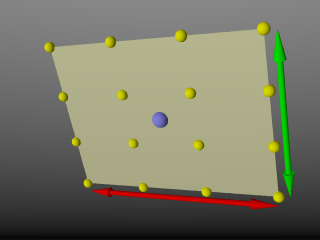

3.4.7 Light Sources

|
|
3.4.6 Constructive Solid Geometry |
POV-Ray 3.6 for UNIX documentation 3.4.7 Light Sources |
3.4.8 Light Groups |
|
The light_source is not really an object. Light sources have no visible shape of their own. They are
just points or areas which emit light. They are categorized as objects so that they can be combined with regular
objects using union. Their full syntax is:
LIGHT_SOURCE:
light_source
{
<Location>, COLOR
[LIGHT_MODIFIERS...]
}
LIGHT_MODIFIER:
LIGHT_TYPE | SPOTLIGHT_ITEM | AREA_LIGHT_ITEMS |
GENERAL_LIGHT_MODIFIERS
LIGHT_TYPE:
spotlight | shadowless | cylinder | parallel
SPOTLIGHT_ITEM:
radius Radius | falloff Falloff | tightness Tightness |
point_at <Spot>
PARALLEL_ITEM:
point_at <Spot>
AREA_LIGHT_ITEM:
area_light <Axis_1>, <Axis_2>, Size_1, Size_2 |
adaptive Adaptive | jitter Jitter | circular | orient
GENERAL_LIGHT_MODIFIERS:
looks_like { OBJECT } |
TRANSFORMATION fade_distance Fade_Distance |
fade_power Fade_Power | media_attenuation [Bool] |
media_interaction [Bool] | projected_through
LIGHT_TYPE : pointlight falloff : 70 media_interaction : on media_attenuation : off point_at : <0,0,0> radius : 70 tightness : 10
The different types of light sources and the optional modifiers are described in the following sections.
The first two items are common to all light sources. The <Location> vector gives the
location of the light. The COLOR gives the color of the light. Only the red, green, and blue components are
significant. Any transmit or filter values are ignored.
Note: you vary the intensity of the light as well as the color using this parameter.
A color such as rgb <0.5,0.5,0.5> gives a white light that is half the normal intensity.
All of the keywords or items in the syntax specification above may appear in any order. Some keywords only have effect if specified with other keywords. The keywords are grouped into functional categories to make it clear which keywords work together. The GENERAL_LIGHT_MODIFIERS work with all types of lights and all options.
Note: that TRANSFORMATIONS such as translate,
rotate etc. may be applied but no other OBJECT_MODIFIERS may be used.
There are three mutually exclusive light types. If no LIGHT_TYPE is specified it is a point light. The
other choices are spotlight and cylinder.
The simplest kind of light is a point light. A point light source sends light of the specified color uniformly in
all directions. The default light type is a point source. The <Location> and COLOR
is all that is required. For example:
light_source {
<1000,1000,-1000>, rgb <1,0.75,0> //an orange light
}
Normally light radiates outward equally in all directions from the source. However the spotlight
keyword can be used to create a cone of light that is bright in the center and falls of to darkness in a soft fringe
effect at the edge.
Although the cone of light fades to soft edges, objects illuminated by spotlights still cast hard shadows. The syntax is:
SPOTLIGHT_SOURCE:
light_source
{
<Location>, COLOR spotlight
[LIGHT_MODIFIERS...]
}
LIGHT_MODIFIER:
SPOTLIGHT_ITEM | AREA_LIGHT_ITEMS | GENERAL_LIGHT_MODIFIERS
SPOTLIGHT_ITEM:
radius Radius | falloff Falloff | tightness Tightness |
point_at <Spot>
Default values:
radius: 30 degrees falloff: 45 degrees tightness: 0
The point_at keyword tells the spotlight to point at a particular 3D coordinate. A line from the
location of the spotlight to the point_at coordinate forms the center line of the cone of light. The
following illustration will be helpful in understanding how these values relate to each other.
The falloff, radius, and tightness keywords control the way that light
tapers off at the edges of the cone. These four keywords apply only when the spotlight or cylinder
keywords are used.
The falloff keyword specifies the overall size of the cone of light. This is the point where the light
falls off to zero intensity. The float value you specify is the angle, in degrees, between the edge of the cone and
center line. The radius keyword specifies the size of the "hot-spot" at the center of the cone
of light. The "hot-spot" is a brighter cone of light inside the spotlight cone and has the same center line.
The radius value specifies the angle, in degrees, between the edge of this bright, inner cone and the
center line. The light inside the inner cone is of uniform intensity. The light between the inner and outer cones
tapers off to zero.
For example, assuming a tightness 0, with radius 10 and falloff 20 the light
from the center line out to 10 degrees is full intensity. From 10 to 20 degrees from the center line the light falls
off to zero intensity. At 20 degrees or greater there is no light.
Note: if the radius and falloff values are close or equal the light intensity drops rapidly and the spotlight has a sharp edge.
The values for the radius, and tightness parameters are half the opening angles of the
corresponding cones, both angles have to be smaller than 90 degrees. The light smoothly falls off between the radius
and the falloff angle like shown in the figures below (as long as the radius angle is not negative).
The tightness keyword is used to specify an additional exponential softening of the edges. A
value other than 0, will affect light within the radius cone as well as light in the falloff cone. The intensity of
light at an angle from the center line is given by: intensity * cos(angle)tightness. The default
value for tightness is 0. Lower tightness values will make the spotlight brighter, making the spot wider and the edges
sharper. Higher values will dim the spotlight, making the spot tighter and the edges softer. Values from 0 to 100 are
acceptable.
You should note from the figures that the radius and falloff angles interact with the tightness parameter. To give the tightness value full control over the spotlight's appearance use radius 0 falloff 90. As you can see from the figure below. In that case the falloff angle has no effect and the lit area is only determined by the tightness parameter.
Spotlights may be used anyplace that a normal light source is used. Like any light sources, they are invisible. They may also be used in conjunction with area lights.
The cylinder keyword specifies a cylindrical light source that is great for simulating laser beams.
Cylindrical light sources work pretty much like spotlights except that the light rays are constrained by a cylinder
and not a cone. The syntax is:
CYLINDER_LIGHT_SOURCE:
light_source
{
<Location>, COLOR cylinder
[LIGHT_MODIFIERS...]
}
LIGHT_MODIFIER:
SPOTLIGHT_ITEM | AREA_LIGHT_ITEMS | GENERAL_LIGHT_MODIFIERS
SPOTLIGHT_ITEM:
radius Radius | falloff Falloff | tightness Tightness |
point_at <Spot>
Default values:
radius: 0.75 degrees falloff: 1 degrees tightness: 0
The point_at, radius, falloff and tightness keywords control
the same features as with the spotlight. See "Spotlights" for details.
You should keep in mind that the cylindrical light source is still a point light source. The rays are emitted from one point and are only constraint by a cylinder. The light rays are not parallel.
syntax:
light_source {
LOCATION_VECTOR, COLOR
[LIGHT_SOURCE_ITEMS...]
parallel
point_at VECTOR
}
The parallel keyword can be used with any type of light source.
Note: for normal point lights, point_at must come after parallel.
Parallel lights are useful for simulating very distant light sources, such as sunlight. As the name suggests, it makes the light rays parallel.
Technically this is done by shooting rays from the closest point on a plane to the object intersection point. The
plane is determined by a perpendicular defined by the light location and the point_at
vector.
Two things must be considered when choosing the light location (specifically, its distance):
fade_distance and fade_power use the light location to determine distance
for light attenuation, so the attenuation still looks like that of a point source. Area light sources occupy a finite, one- or two-dimensional area of space. They can cast soft shadows because an object can partially block their light. Point sources are either totally blocked or not blocked.
The area_light keyword in POV-Ray creates sources that are rectangular in shape, sort of like a flat
panel light. Rather than performing the complex calculations that would be required to model a true area light, it is
approximated as an array of point light sources spread out over the area occupied by the light. The array-effect
applies to shadows only. The object's illumination is still that of a point source. The intensity of each individual
point light in the array is dimmed so that the total amount of light emitted by the light is equal to the light color
specified in the declaration. The syntax is:
AREA_LIGHT_SOURCE:
light_source {
LOCATION_VECTOR, COLOR
area_light
AXIS_1_VECTOR, AXIS_2_VECTOR, Size_1, Size_2
[adaptive Adaptive] [ jitter ]
[ circular ] [ orient ]
[ [LIGHT_MODIFIERS...]
}
Any type of light source may be an area light.
The area_light command defines the location, the size and orientation of the area light as well as the number of
lights in the light source array. The location vector is the centre of a rectangle defined by the two vectors <Axis_1>
and <Axis_2>. These specify the lengths and directions of the edges of the light.

Since the area lights are rectangular in shape these vectors should be perpendicular to each other. The larger the size of the light the thicker the soft part of shadows will be. The integers Size_1 and Size_2 specify the number of rows and columns of point sources of the. The more lights you use the smoother your shadows will be but the longer they will take to render.
Note: it is possible to specify spotlight parameters along with the area light parameters to create area spotlights. Using area spotlights is a good way to speed up scenes that use area lights since you can confine the lengthy soft shadow calculations to only the parts of your scene that need them.
An interesting effect can be created using a linear light source. Rather than having a rectangular shape, a linear light stretches along a line sort of like a thin fluorescent tube. To create a linear light just create an area light with one of the array dimensions set to 1.
The jitter
command is optional. When used it causes the positions of the point lights in the array to be randomly jittered to
eliminate any shadow banding that may occur. The jittering is completely random from render to render and should not
be used when generating animations.
The adaptive command is
used to enable adaptive sampling of the light source. By default POV-Ray calculates the amount of light that reaches a
surface from an area light by shooting a test ray at every point light within the array. As you can imagine this is
very slow. Adaptive sampling on the other hand attempts to approximate the same calculation by using a minimum number
of test rays. The number specified after the keyword controls how much adaptive sampling is used. The higher the
number the more accurate your shadows will be but the longer they will take to render. If you are not sure what value
to use a good starting point is adaptive 1. The adaptive keyword only accepts integer
values and cannot be set lower than 0.
When performing adaptive sampling POV-Ray starts by shooting a test ray at each of the four corners of the area light. If the amount of light received from all four corners is approximately the same then the area light is assumed to be either fully in view or fully blocked. The light intensity is then calculated as the average intensity of the light received from the four corners. However, if the light intensity from the four corners differs significantly then the area light is partially blocked. The area light is split into four quarters and each section is sampled as described above. This allows POV-Ray to rapidly approximate how much of the area light is in view without having to shoot a test ray at every light in the array. Visually the sampling goes like shown below.
While the adaptive sampling method is fast (relatively speaking) it can sometimes produce inaccurate shadows. The
solution is to reduce the amount of adaptive sampling without completely turning it off. The number after the adaptive
keyword adjusts the number of times that the area light will be split before the adaptive phase begins. For example if
you use adaptive 0 a minimum of 4 rays will be shot at the light. If you use adaptive 1 a
minimum of 9 rays will be shot (adaptive 2 gives 25 rays, adaptive 3 gives 81 rays, etc).
Obviously the more shadow rays you shoot the slower the rendering will be so you should use the lowest value that
gives acceptable results.
The number of rays never exceeds the values you specify for rows and columns of points. For example area_light
x,y,4,4 specifies a 4 by 4 array of lights. If you specify adaptive 3 it would mean that you
should start with a 9 by 9 array. In this case no adaptive sampling is done. The 4 by 4 array is used.
The circular command has been added to area lights in order to better create circular soft shadows.
With ordinary area lights the pseudo-lights are arranged in a rectangular grid and thus project partly rectangular
shadows around all objects, including circular objects.
By including the circular tag in an area
light, the light is stretched and squashed so that it looks like a circle: this way, circular or spherical light
sources are better simulated.
A few things to remember:
circular with linear area lights or area lights which have a 2x2 size.
The orient command has been added to area lights in order to better create soft shadows. Without this
modifier, you have to take care when choosing the axis vectors of an area_light, since they define both its area and
orientation.
Area lights are two dimensional: shadows facing the area light receive light from a larger surface
area than shadows at the sides of the area light.
Actually, the area from which light is emitted at the sides of the area light is reduced to a single line, only
casting soft shadows in one direction.
Between these two extremes the surface area emitting light progresses gradually.
By including the orient
modifier in an area light, the light is rotated so that for every shadow test, it always faces the point being tested.
The initial orientation is no longer important, so you only have to consider the desired dimensions (area) of the
light source when specifying the axis vectors.
In effect, this makes the area light source appear 3-dimensional
(e.g. an area_light with perpendicular axis vectors of the same size and dimensions using circular and
orient simulates a spherical light source).
Orient has a few restrictions:
These three rules exist because without them, you can get unpredictable results from the orient feature.
If one of the first two rules is broken, POV will issue a warning and correct the problem. If the third rule is broken, you will only get the error message, and POV will not automatically correct the problem.
Using the shadowless keyword you can stop a light source from casting shadows. These lights are
sometimes called "fill lights". They are another way to simulate ambient light however shadowless lights
have a definite source. The syntax is:
SHADOWLESS_LIGHT_SOURCE:
light_source
{
<Location>, COLOR shadowless
[LIGHT_MODIFIERS...]
}
LIGHT_MODIFIER:
AREA_LIGHT_ITEMS | GENERAL_LIGHT_MODIFIERS
shadowless may be used with all types of light sources. The only restriction is that shadowless
should be before or after all spotlight or cylinder option keywords. Do not mix or you get the message
"Keyword 'the one following shadowless' cannot be used with standard light source". Also note that
shadowless lights will not cause highlights on the illuminated objects.
Normally the light source itself has no visible shape. The light simply radiates from an invisible point or area.
You may give a light source any shape by adding a looks_like { OBJECT } statement.
There is an implied no_shadow attached to the looks_like object so that light is not
blocked by the object. Without the automatic no_shadow the light inside the object would not escape. The
object would, in effect, cast a shadow over everything.
If you want the attached object to block light then you should attach it with a union and not a looks_like
as follows:
union {
light_source { <100, 200, -300> color White }
object { My_Lamp_Shape }
}
Presumably parts of the lamp shade are transparent to let some light out.
Syntax:
light_source {
LOCATION_VECTOR, COLOR
[LIGHT_SOURCE_ITEMS...]
projected_through { OBJECT }
}
Projected_through can be used with any type of light source. Any object can be used, provided it has been declared
before.
Projecting a light through an object can be thought of as the opposite of shadowing: only the light rays
that hit the projected_through object will contribute to the scene.
This also works with area_lights, producing
spots of light with soft edges.
Any objects between the light and the projected through object will not cast
shadows for this light. Also any surface within the projected through object will not cast shadows.
Any textures
or interiors on the object will be stripped and the object will not show up in the scene.
By default POV-Ray does not diminish light from any light source as it travels through space. In order to get a
more realistic effect fade_distance and fade_power keywords followed by float values can be
used to model the distance based falloff in light intensity.
The fade_distance
is used to specify the distance at which the full light intensity arrives, i. e. the intensity which was given by the COLOR
specification. The actual attenuation is described by the fade_power Fade_Power,
which determines the falloff rate. For example linear or quadratic falloff can be used by setting fade_power
to 1 or 2 respectively. The complete formula to calculate the factor by which the light is attenuated is
with d being the distance the light has traveled.
You should note two important facts: First, for Fade_Distance larger than one the light
intensity at distances smaller than Fade_Distance actually increases. This is necessary to get
the light source color if the distance traveled equals the Fade_Distance. Second, only light
coming directly from light sources is attenuated. Reflected or refracted light is not attenuated by distance.
By default light sources will interact with an atmosphere added to the scene. This behavior can be switched off by
using media_interaction off inside the light source statement.
Note: in POV-Ray 3.0 this feature was turned off and on with the atmosphere keyword.
Normally light coming from light sources is not influenced by fog or atmospheric media. This can be changed by
turning the media_attenuation on for a given light source on. All light coming from this light source
will now be diminished as it travels through the fog or media. This results in an distance-based, exponential
intensity falloff ruled by the used fog or media. If there is no fog or media no change will be seen.
Note:in POV-Ray 3.0 this feature was turned off and on with the atmospheric_attenuation keyword.
|
|
3.4.6 Constructive Solid Geometry | 3.4.7 Light Sources | 3.4.8 Light Groups |
|